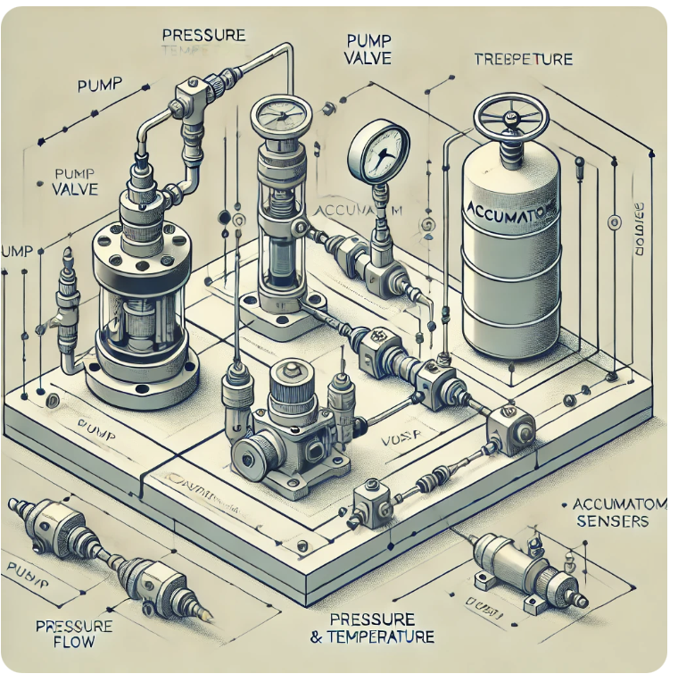
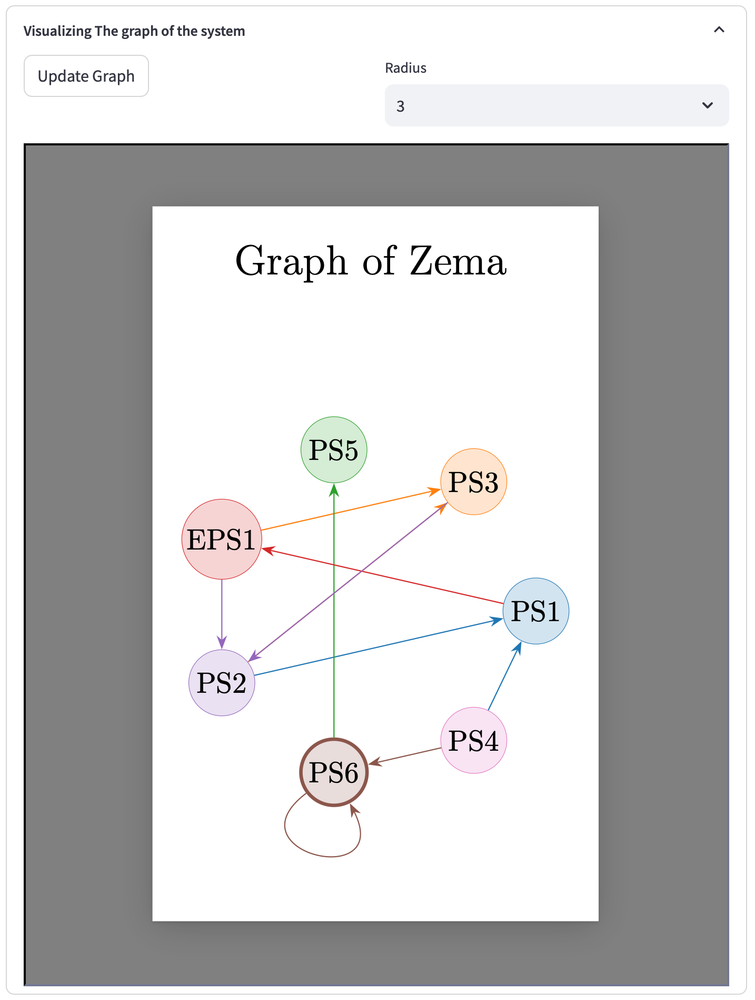

Digital Twins
From dataframes to simulator of a hydraulic rig
1 The dataset
- Zema Dataset
- This is a public dataset that is available at UC Irvine Machine Learning Repository.
This system has been already encoutered in this documentation (see the g2sys module presentation and the introduction on the concept of graph for some examples and movies of identification relationships). In this section, we start from a set of already identified relationships and proceed for the presentation of the rationale of constructing the Digital Twin for this system1.
| 7 sensors | 255,420 rows |

2 The identified relationships
The g2sys module has been used (as shown previously) to derive a set of polynomial relationships that might be static (non recursive) or dynamic (recursive) that are each indexed by one of the sensors.
The fitting provided by these relationships is shown on the snapshots below which are extracted from the g2sys module. Notice that each screenshot shows an appropriate zoom on the predicted and the measured value, the head of the screenshot introduces the sensor indexing the relationship, the pickled file containing the solution, the number of parameters involved (card) and the type of relationship (static/dynamic). The right hand side dataframe shows the other sensors involved in the relationship, other than the sensor indexing the relationship.

3 The graph of the system
Based on the above relationships, the following graph can also be displayed in the g2sys module:

Ny only looking on the graph, the following information can be steered out:
PS4is not index of any relationship and therefore, it is an exogenous input to the simulator.PS6is defined by a recursive relationship with the only inputPS4which means that it can be simulated alone independently of the other sensors.PS5is defined completely fromPS6.All the remaining sensors, namely (
PS1,PS2,PS3,EPS1) are coupled through circular chain of relationships that starts and end withPS2, namely:\[ \small \begin{align} (\texttt{PS2}, \texttt{PS4})&\rightarrow \Bigl(\texttt{PS1}=F_1(\texttt{PS2}, \texttt{PS4})\Bigr)\rightarrow \Bigl(\texttt{EPS1}=F_e(\texttt{PS1})=F_e\circ F_1(\texttt{PS2}, \texttt{PS4})\Bigr) \\ &\rightarrow \texttt{PS3}=F_3(\texttt{PS2}, \texttt{EPS1})=F_3(\texttt{PS2}, F_e\circ F_1(\texttt{PS2}, \texttt{PS4}))\\ &\rightarrow \texttt{PS2}=F_2(\texttt{PS1}, \texttt{PS3}, \texttt{EPS1})\\ &=F_2(F1(\texttt{PS2}, \texttt{PS4}), F_3(\texttt{PS2}, F_e\circ F_1(\texttt{PS2}, \texttt{PS4})), F_e\circ F_1(\texttt{PS2}, \texttt{PS4})) \end{align} \]
Which highlights the fact that, Given
PS4, the value ofPS2is the solution of the following fixed-point equation:\[ \begin{align} \texttt{PS2}&=F_2(F1(\texttt{PS2}, \texttt{PS4}), F_3(\texttt{PS2}, F_e\circ F_1(\texttt{PS2}, \texttt{PS4})), F_e\circ F_1(\texttt{PS2}, \texttt{PS4}))\\ &=:G(\texttt{PS2}, \texttt{PS4}) \end{align} \tag{1}\]
where the function \(G\) is given in terms of the function \(F_1\), \(F_2\), \(F_3\) and \(F_e\) which express the relationships indexed respectively by
PS1,PS2,PS3andEPS1.
The previous discussion can be summarized by the following functional representation of the simulator:

The expressions of the relationships (multi-variate polynomials) indexed by PS6, PS5, PS1, PS2, PS3 and EPS1 are detailed in the following section.
4 The relationships \(F_i\) as polynomials
Recall that g2sys module identifies relationships as sparse multi-variate polynomial in the sensors and possibly their delayed values. The polynomials have been defined in the dedicated section. Nevertheless, the definition is reported here for an easy reading:
\[ P(x)=\sum_{i=1}^{n_c} c_i\phi_i(x)\quad\text{where}\quad \phi_i(x) = \prod_{j=1}^{n}x_j^{p_{ij}} \]
which obviously highlights that a polynomial is defined by the definition of:
- The vector of input argument \(x\)
- The matrix of powers \(P\)
- The vector of coefficients \(c\)
The different relationships \(F_i\) invoked above are quatitatively exposed below using the following script that uses the model object returned by the g2sys module:
for i in range(len(model)):
s = list(model[i].keys())[0]
print(f'Relationship indexed by {s}')
print('==================================')
print(f"arguments: {model[i][s]['Lred']}")
print('--------')
print(f"powers \n {model[i][s]['powers']}")
print('--------')
print(f"coefficients: \n {model[i][s]['coefs']}")
print('---')Relationship indexed by PS1
==================================
arguments: ['PS2(k)', 'PS4(k)']
--------
powers
[[1 0]
[1 1]
[1 2]
[0 3]
[0 0]
[2 1]]
--------
coefficients:
[-4.84246973e+00 7.99740424e-01 -4.67676520e-02 8.21090988e-04
1.89816397e+02 9.66131922e-04]
--------Relationship indexed by PS2
==================================
arguments: ['PS1(k)', 'PS3(k)', 'EPS1(k)']
--------
powers
[[1 0 0]
[0 0 0]
[0 1 0]
[3 0 0]
[0 3 0]
[0 2 1]
[0 0 3]
[2 1 0]
[1 1 0]]
--------
coefficients:
[-2.87731163e+00 4.21757215e+02 -1.96187950e+02 9.57650449e-06
7.31035037e-01 -5.17391969e-03 2.43389818e-09 -2.30772152e-03
2.01399466e+00]Relationship indexed by PS3
==================================
arguments: ['PS2(k)', 'EPS1(k)']
--------
powers
[[0 0]
[5 0]
[0 5]
[0 3]
[1 4]
[0 4]]
--------
coefficients:
[-1.86823664e+00 -8.97436718e-11 3.86793042e-16 3.32470511e-09
1.09409733e-15 -2.24364110e-12]Relationship indexed by EPS1
==================================
arguments: ['PS1(k)']
--------
powers
[[1]
[0]]
--------
coefficients:
[ 13.09598968 441.01619799]Relationship indexed by PS6
==================================
arguments: ['PS6(k-4)', 'PS4(k)', 'PS4(k-4)']
--------
powers
[[1 0 0]
[0 1 0]
[0 0 1]]
--------
coefficients:
[ 0.00348076 -0.77680475 0.77334424]Relationship indexed by PS5
==================================
arguments: ['PS6(k)']
--------
powers
[[1]]
--------
coefficients:
[1.01204197]5 Construction of the Digital Twin
Let first defne the functions \(F_i\) as defined above using the following script
import numpy as np
from plars import predict
def F1(PS2, PS4):
x = np.array([PS2, PS4]).reshape(-1,1)
val = predict(x, model[0]['PS1'])
return val[0]
def F2(PS1, PS3, EPS1):
x = np.array([PS1, PS3, EPS1]).reshape(-1,1)
val = predict(x, model[1]['PS2'])
return val[0]
def F3(PS2, EPS1):
x = np.array([PS2, EPS1]).reshape(-1,1)
val = predict(x, model[2]['PS3'])
return val[0]
def Fe(PS1):
x = np.array([PS1]).reshape(-1,1)
val = predict(x, model[4]['EPS1'])
return val[0]
def F5(PS6):
x = np.array([PS6]).reshape(-1,1)
val = predict(x, model[3]['PS5'])
return val[0]
def F6(PS6_past, PS4, PS4_past):
x = np.array([PS6_past, PS4, PS4_past]).reshape(-1,1)
val = predict(x, model[5]['PS6'])
return val[0] The first four function enable to define the fixed-point map \(\textbf{G}\) defined by Equation 1 using the following script:
def G(PS2, PS4):
PS1 = F1(PS2, PS4)
EPS1 = Fe(PS1)
PS3 = F3(PS2, EPS1)
PS2_new = F2(PS1, PS3, EPS1)
return PS2_newFootnotes
As it has been disclaimed earlier, this cannot always be successful, because of the non completness of the data. More precisely, if there are quantities that impact strongly the behavior of the system which are not present in the set of sensors, then it is rigorously impossible to design a dynamic simultator from the available information.↩︎